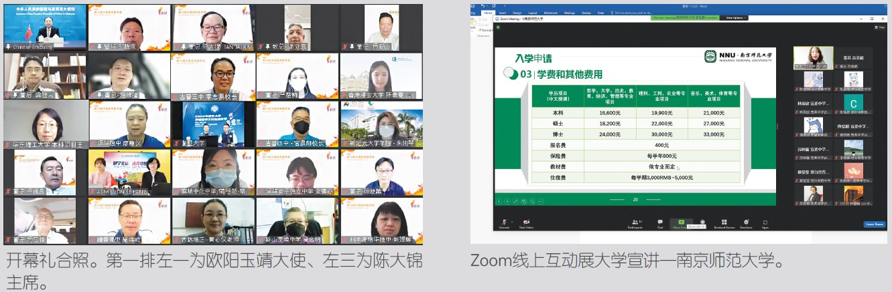

2022年第18届中国高等教育展顺利开跑
因新冠疫情之故，董总连续两年来采用线上模式举办中国高等教育展。2022年第18届高教展共吸引了46所来自中国大陆、香港、澳门地区的高校，以及2所本地民办高等学府报名参加。
除了于1月24日正式开始的线上资料展，本届高教展另有三个配套活动，即生涯规划讲座、Zoom线上互动展和留学生分享。
《扬起风帆，迈向未来》生涯规划讲座于3月2日举办，共有170位参与者，内容主要带领学生探索自己的能力、兴趣、个性和价值观等，进而找到适合个人发展的职业方向。
紧接下来是3月10日至12日的Zoom线上互动展。互动展首日也是高教展的开幕礼，出席者约180人，其中包括中国驻马来西亚大使馆特命全权大使欧阳玉靖、教育参赞赵长涛和秘书张天。此外，本会主席陈大锦、副主席杨应俊、卢成良、包章文、吴小铭和中央委员，执行长梁胜义和行政主管、马来西亚华校教师会总会主席谢立意、马来西亚留华同学会副会长苏耀原、马来西亚旅华同学会主席杨艾昕，以及中国大陆、香港和澳门特区45所高校约70名代表，2所马来西亚民办学府2名代表和33所华文独中约43位校长、教师也出席观礼。
陈主席在开幕礼致词中感谢各高校于疫情期间给予留学生的协助和通融，为了确保学生们能够顺利报读，就入学申请时段和申请条件不断调整招生工作方案。虽然学生目前还不能入境，但大学也为此开设线上课程，以便学生们能够在不耽误学习时间的情况下继续学习。
欧阳大使表示，虽然近几年来受新冠疫情的影响，让世界各国留学生在求学过程中，遇到了种种的问题，但中国政府及时关注并妥善解决境外留学生合理的诉求和实际困难。中国各高校也加强与留学生的沟通联系，积极探讨线上线下教育融合，推动“互联网+”条件下的留学教育模式创新，全力为大马留学生提供优质教学和专业服务。
在开幕礼上，出席者也一同欣赏了来自大山脚日新独立中学廿十四节令鼓队呈现的开幕表演，随后是为期三天的“Zoom线上互动展”。这是今年新增的重点活动之一，吸引了超过1,500名学生和家长报名，让家长、学生与大学代表有一个面对面交流的平台，直接且轻松掌握赴华升学咨询服务和所需资讯。
留学生线上分享于4月11、13和15日进行，共获得约80人报名参与，由6位来自中国广东省、香港和澳门地区的学长姐做分享。学长姐们除了分享留华的学习经历，也就近年疫情的情况，与大家分享线上学习的心得，以便学弟妹们在进入大学就读前，可事先对未来的大学生活做准备。
上述三项活动虽已圆满举办，对赴华升学有兴趣的同学们仍可到中国高教展网页（https://edufairchina.dongzong.my/）搜寻资讯。
参展大学名单：
| 序 | 大学 | 序 | 大学 |
|---|---|---|---|
| 1 | 北京理工大学* | 25 | 东莞理工学院 |
| 2 | 中央财经大学* | 26 | 汕头大学 |
| 3 | 北京航空航天大学* | 27 | 南方科技大学* |
| 4 | 中国石油大学（北京）* | 28 | 浙江传媒学院* |
| 5 | 东华大学* | 29 | 浙江中医药大学* |
| 6 | 同济大学* | 30 | 浙江大学 |
| 7 | 上海中医药大学* | 31 | 华侨大学 |
| 8 | 上海交通大学* | 32 | 厦门大学* |
| 9 | 复旦大学* | 33 | 香港浸会大学* |
| 10 | 华东理工大学* | 34 | 香港教育大学* |
| 11 | 上海海洋大学* | 35 | 香港理工大学* |
| 12 | 上海交通大学医学院* | 36 | 香港城市大学* |
| 13 | 天津大学* | 37 | 香港科技大学 |
| 14 | 西交利物浦大学* | 38 | 香港中文大学 |
| 15 | 南京中医药大学 | 39 | 香港恒生大学 |
| 16 | 南京大学 | 40 | 岭南大学* |
| 17 | 南京艺术学院* | 41 | 香港大学* |
| 18 | 南京信息工程大学* | 42 | 圣若瑟大学 |
| 19 | 东南大学* | 43 | 澳门大学* |
| 20 | 南京航空航天大学* | 44 | 澳门科技大学 |
| 21 | 中国矿业大学* | 45 | 澳门理工学院 |
| 22 | 南京师范大学* | 46 | 澳门旅游学院* |
| 23 | 南京医科大学* | 47 | 新纪元大学学院 |
| 24 | 中国科学技术大学* | 48 | 韩江传媒大学学院 |
备注：*为有参加Zoom线上互动展的34所大学
4月11日至15日留学生分享详情：
| 日期 | 分享人信息 |
|---|---|
| 4月11日 星期一 2pm-3pm |
分享人1 罗资翔（现任新媒体设计师） 广州美术学院 - 数字媒体艺术 |
| 分享人2 朱鈺煊（硕士） 澳门大学 - 传播学 |
|
| 4月13日 星期三 2pm-3pm |
分享人1 张炳强（大四） 香港教育大学 – 英语教育学系 |
| 分享人2 刘宇轩（大四） 澳门大学 - 生物医药 |
|
| 4月15日 星期五 2pm-3pm |
分享人1 浦尹婷（大三） 中山大学 - 行政管理 |
| 分享人2 黄意婷（大三） 暨南大学 - 市场营销 |